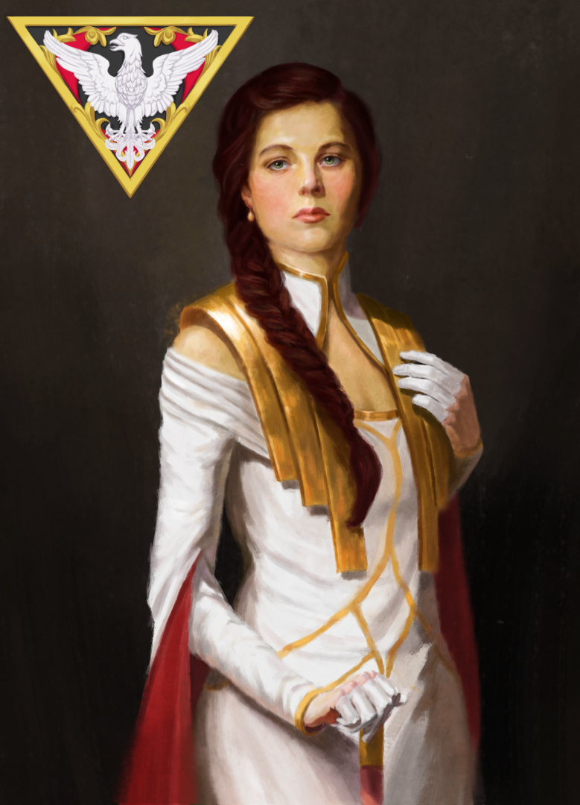
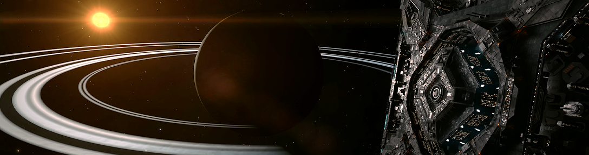
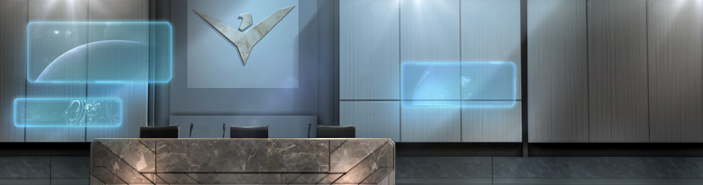
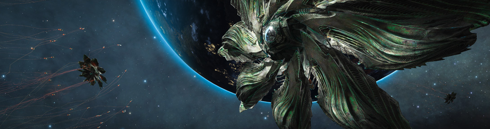
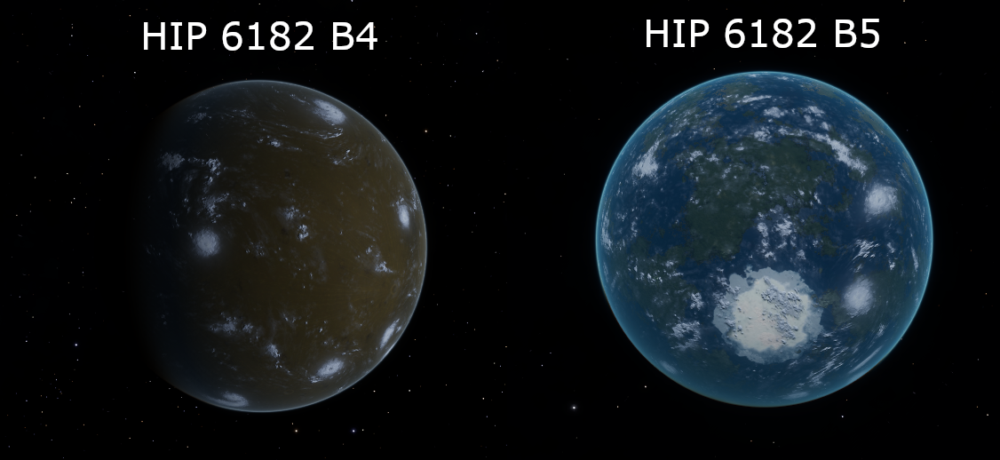
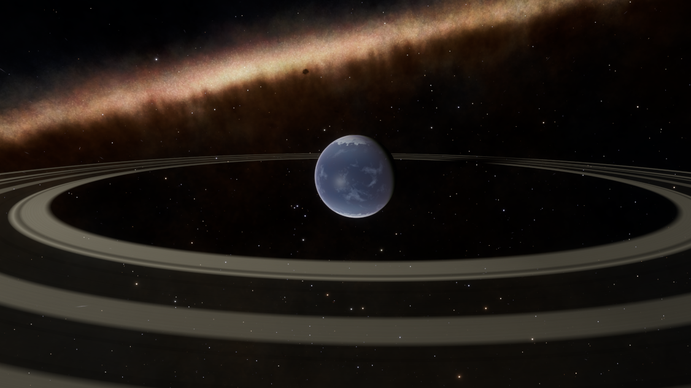
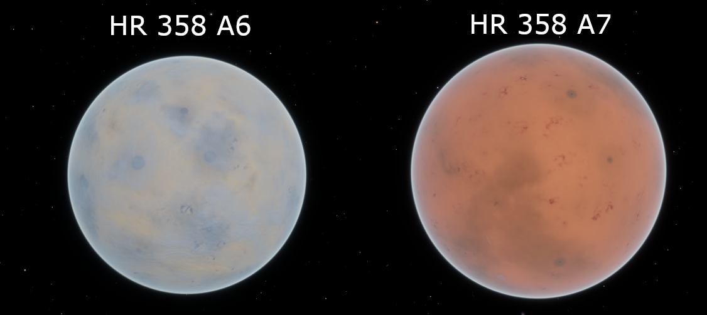

House of Salus
The noble House of Salus was formed in 2360, and Francis I. of Salus was crowned archduke within the newly formed Empire just a few years after. His son Francis II. was also the first archduke of Salus to represent the House in the Imperial senate. House Salus is renowned within the Empire for specialising in exploration, and colonising newly found systems on the outskirts of Imperial space. For many generations House Salus was content with settling new systems, and then leave the administration of said systems in the capable hands of newly formed Empire aligned factions.
The current reigning matriarch of House Salus changed this however. Archduchess Magdalena Sophia von Salus settled the House in Gallemi, from which they now plan their next expansions, and colonisation efforts. The House remains one of the few traditionalist, and isolationist Imperial houses. So her ascension as the first matriarch of House Salus, and especially her departure from a nomadic and fleet-based lifestyle were highly controversial. Nevertheless the House has prospered in Gallemi, without sacrificing its future colonisation prospects.
Fiat iustitia, ne pereat mundus.






House Salus retakes systems from Bunbudo Group
The Imperial system administration faction “Salus Imperial Society” of House Salus has retaken most of its former colonies from the Bunbudo Group, a conglomerate of Imperial corporations. The systems of Saelishi, Bunbudo and HIP 8722 were initially colonised decades ago by the efforts of Arch-Duke Ferdinand of Salus to expand the bubble at the outskirts of Imperial space. As was tradition then, the Arch-Duke handed the colonised systems over to local factions to rule, as House Salus set its sights on establishing new colonies. His daughter however, the current reigning monarch of House Salus, Archduchess Magdalena von Salus, broke with tradition and ordered a new faction to be formed: the Salus Imperial Society. According to the Archduchess, this new faction’s founding purpose is to reclaim the worlds her father had terraformed centuries ago: “In the past we did not have the resources to both colonise new systems, and also manage those we had already settled. So we worked closely with other Imperial factions to oversee the day to day operations of running these frontier systems. But what my father did not foresee was that one faction, the Bunbudo Group, would rise in power to take over all of the systems in question. Not only did they neglect the colonisation of these systems, but also exploited the systems for personal wealth and profit.”
Long time friend and ally of the House, Danial Shields, has taken charge of this new faction to oversee the well-being of now over a million Imperial citizens. “We are a traditional faction, valuing Imperial honour and the patronage system. We believe that each citizen has a right to choose their cliens, who in turn are responsible for their well being. While Imperial slavery is allowed, do note that slaves have extended rights in Salus’ domain, which also apply to all Imperial slaves that set foot on a Salus’ controlled planets or stations. If you are being wrongfully exploited by your current owners, contact us, and we can make sure you receive a better and fairer treatment in Salus’ realm.We have already helped thousands of Imperial slaves this way, many of whom come from Zemina Torval’s space.” The road to establishing dominance in the aforementioned systems was not easy. House Salus had to expand its fleet to fend off attacks by the Bunbudo Group, as the corporate conglomerate attempted to retake systems. Here the Empire aligned pilots of the squadron “Salus Invicta” helped immensely, by fighting in Salus’ wars and helping with system wide elections. After their latest victory in claiming Yamari for the society, CMDR Hekateh issued a rallying cry for support: “Join us today if you are an Empire aligned commander, and wish to support the Empire as it ought to be: traditionalist, inward focused, and based on honour. We are looking for miners, explorers, warriors, as well as diplomats.”
The Order and Salus sign a historic treaty
After signing a comprehensive treaty, cementing commercial and security collaboration between the Salus Imperial Society and the Kaleni Order, the two factions built a shared embassy in the science installation “Wisdom Vista” in the Bunbudo System. A grand opening ceremony was held for the embassy, as high ranking officials of House Salus, and its naval arm Salus Invicta were present to sign an extensive peace treaty with Salus’ biggest neighbour: The Order from the star system Kaleni. Both factions seek to benefit from this alliance through trade, and a mutual security assurance. The Arch-Duchess reaffirmed this stance: “The Order is our biggest trading partner, and their leadership has shown time and time again, that they are willing to defend Salus’ realm as they would their own. House Salus is deeply honoured, and commits itself to do the same: House Salus will defend the citizens of the Order unto its last naval ship.” The Order had been invited to expand into the system of Bunbudo to strengthen the diplomatic relationship between the two factions. Both sides had been avidly supporting each other, with pilots of The Order aiding House Salus with winning important elections in their home system of Gallemi, while in return pilots from Salus Invicta helped the Order quell a war that threatened the security of the HIP 6418 system.
CMDR Hekateh from Salus Invicta, who was the diplomatic liaison for the faction had the following to say:
“In late 3307 the Order of Orion, alongside CMDR Raoul Bitenbois and I fought a month-long battle against The Order to defend one of Orion’s worlds. But now, The Order are one of our closest friends and allies. And we could not be more proud and honoured to have them at our side. It shows that diplomacy and friendship can and will prevail, and that we all have to stand together, especially in these trying times, when crazy megalomaniacs like Salvation threaten the peace of the entire bubble.” CMDR Cirede, himself Master of the Order shared this sentiment during the ceremony: “We are glad to celebrate officially an already long collaboration with your organisation. Our alliance is made of strong trust and friendship and will be profitable for all of us by taking care of each other, the recent past has demonstrated it. So as Master of The Order, I promise officially to bring all the power of Kaleni Order to help Salus Invicta each time it'll be necessary, knowing that it will be reciprocal.”
Armistice agreement ends conflict between two warring factions
Tactical Operation 31 and Reaver Fleet Mercantile signed an armistice agreement in Gallemi, bringing the weeks-long conflict to a peaceful end. Several months ago diplomatic relations between the faction Tactical Operation 31 (TO31), and its neighbour Reaver Fleet Mercantile (RFM) broke down, as the former expanded into the Reaver Fleet owned systems of Catucab and Potilla. These were not the only expansions into Reaver Fleet territory with hostile intent, as CMDR Hekateh from Salus Invicta explained:
“Salus Invicta was not without blame in escalating this conflict, as we supported our allies of the Steel Brotherhood and the Kaleni Order when they expanded into Reaver Fleet territory. I apologised to CMDR Master Cesspit for our illegal intrusion into Reaver Fleet territory, and ceased any and all hostile activities in their territories. This allowed me to atone for my actions, and redeem myself in the eyes of CMDR Master Cesspit.”
CMDR Master Cesspit made it clear that he wanted all factions supported by squadrons gone from Reaver Fleet systems, including Steel Brotherhood, Kaleni Order as well as the Section 31 Tactical Operation. The conflict escalated however, as TO31 continued to win its wars and elections in RFM territory. CMDR compubuster insisted that TO31 had no intentions of taking system control, nevertheless CMDR Master Cesspit saw this as a violation of the red line he had drawn about CMDR supported factions in his systems. Over the course of several weeks the conflict kept escalating into a full-blown war. The TO31 systems of Sagartiaci and Ahaut, as well as the Reaver Fleet home world of Kurine suffered massive infrastructure damage in the conflict, and many innocent civilians either died, were severely wounded, or had to flee the hostilities to neighbouring systems as refugees. CMDR compubuster approached CMDR Hekateh about the conflict, and after talking with both parties involved, CMDR Hekateh offered to become a mediator between the two warring factions. A peace summit was held at Rabinowitz Vision in Gallemi, and after several days of negotiations, both parties signed an armistice agreement to end the conflict. The Archduchess of House Salus welcomed the efforts of the leader of the Salus Invicta, CMDR Hekateh, in hosting negotiations between the two warring factions:
“While the commander has indubitably contributed to the escalation of the conflict in the early stages of the war, the commander has shown willingness to atone for her actions by working towards peace. Especially with the Thargoid threat looming over us all, we have to work together, regardless of whether we are imperial or independent. United we will survive and prosper, divided we will surely fall to the xeno threat.”
Outbreak subsides in HIP 8722
The system of HIP 8722 was struck by a particular infectious outbreak in the past week. Several thousand people were infected by a virulent outbreak in the system of HIP 8722. Those infected suffered from a wide variety of symptoms, including dizziness, fatigue, nausea, headaches, and an acute sensitivity to light. The disease could also end deadly for the more vulnerable among the population, especially the elderly and those with pre-existing medical conditions that lowered their immune response. Medical experts came from all over Salus’ systems to aid in containing the outbreak, and to treat those affected by the virus. The Society also heavily subsidised both advanced and basic medicines to aid imports of these much needed goods. Doctors, medical staff, and logistic experts worked tirelessly for a week to contain the outbreak, to a stunning result: There were no new recorded cases of the illness in the past three days. The origins of the virus are currently unknown. The spokesperson of the Salus Imperial Society Danial Shields was cited saying:
“As of now we have no idea where the outbreak first started, or who patient zero was. But our current theory is that it was brought in by traders and haulers, and then spread among the mining workers on surface settlements.” “During the Bunbudo Group’s reign of the system, the company neither provided adequate healthcare, nor offered sick leave to its workers. Worst of all, any medical expenses weren’t paid for, and were simply deducted from the worker’s wages. This caused a culture, where workers came to work ill, and spread contagious diseases because they feared for their livelihood if they called in sick instead.” “This has changed drastically for the better under Salus’ reign. The Society not only offers free medical services to every citizen in its systems, but also offers sick leave for its workers so they need not fear for their jobs or income. Not only do we wish to prevent outbreaks in the future, but we also want our citizens to be healthy and recover and rest properly.”
The chief medical officer of Marius Colony, Annalisa Saccaroni, M.D. underlined that sentiment:
“It doesn’t matter whether you are a citizen of the Empire backing Salus as a patron, or are independent hauler running errands for Silver Advanced Industrial: We are here for you. Come see us if you seek medical advice, need your prescriptions filled, or if you have a medical emergency.”
Special commendations go out to CMDR Helene Valoux, as well as CMDR Master Cesspit from Reaver Fleet Mercantile, who both delivered thousands of tons of basic and advanced medicines to the system to help with the outbreak.
House Salus welcomes the shift towards a more isolationist Empire
House Salus welcomes the shift of Her Majesty towards a more isolationist Empire. Last Monday GalNet published an article in which Her Majesty, the Emperor Arissa Lavigny-Duval, reaffirmed that the Empire’s strength comes from within. The Emperor was quoted saying: “Imperial systems are better protected against our enemies than they have been in a generation. Never has the future looked so assured. Our glorious history, stretching over a thousand years, teaches us a truth that we must now relearn: The Empire stands stronger alone.” House Salus, long standing supporters of Imperial traditionalism, welcomes this shift in Imperial policy. The Archduchess Magdalena Sophia von Salus expressed her unwavering support for the Empire, and reaffirmed that the shift towards a more isolationist Empire is the right call: “It has been proven time and time again that the Empire grows stronger and more prosperous when it takes matters into its own hands. Whether it be mining precious minerals required for our industry through Mastopolos Mining, manufacturing our own defence solutions through Manticore, or when the Empire terra forms new worlds through House Salus. So we welcome the shift in policy from Her Majesty, and reassure Her that House Salus will be ready to stand with Her Majesty and the Empire. However, it is unfortunate that this shift had to be prompted by the defeat in HIP 22460. If the Imperial Senate had listened to the proponents of isolationism instead of making them pay with their lives, such tragedies might have been avoided.”
House Salus returns Saelishi to the native faction of Saelishi Saxons
The Arch-Duchess has decreed that the system of Saelishi is to be returned to the native faction of Saelishi Saxons. While the system is currently still in Salus’ control, the House as well as its fleet Salus Invicta will not hinder the Saxons from reclaiming their ancestral homeland. After growing discontent from the Saxons, an independent confederacy, their spokesperson CMDR iiMStevo approached the Reaver Fleet Mercantile to request aid to reclaim their ancestral home system. The Reaver Fleet notified CMDR Hekateh through diplomatic channels, after which Saelishi Saxons and the Salus Imperial Society began negotiations. After the negotiations concluded CMDR Hekateh was quoted saying:
“Calling them negotiations might be a bit of a stretch. The Arch-Duchess’ orders were clear: Imperial honour dictates that we return the ancestral lands of the Saxons to their rightful owners. We however made it clear that other colonies of House Salus, such as HIP 6761, shall remain unharmed in the upcoming struggle for Saelishi.”
Imperial Governor Danial Shields has begun preparing for the transfer of power within Saelishi:
“When we gained control of the system several months ago, we found many of its institutions and public services to be severely lacking. House Salus has spent significant man-hours and credits towards improving public health care, strengthening safety regulations and worker’s rights, as well as increasing the fund for paying out bounties for defeated pirates. We leave all of this in the hands of the Saxons, and I hope the system continues to strife and prosper under their leadership.”
The Arch-Duchess Magdalena von Salus also released a statement on the matter in a public address to the citizens of Saelishi:
“The noble House of Salus wishes prosperity and peace upon the Saelishi Saxons. Decades ago the Saxons faced the worst the Empire had to offer: a violent invasion, and an oppressive dictatorial regime that sought to remain in power by any means necessary. House Salus is different. We hold ourselves to our imperial honour, and firmly believe that the Saxons have the right to govern their native home system as they see fit. We hope we will be able to convince them that the Empire does not just consist of warmongers and oppressive slavers. That the Empire is also a force of good, prosperity and security among the stars. Perhaps once their rule has been steadied, we can meet again at the negotiation table. House Salus is looking forward to establishing mutually beneficial trade treaties, and security arrangements with its new neighbours.”
Citizens’ alarmed as Unknown Interstellar Anomalies (UIA) appear in the night sky
A recent article in the “Explorer’s Daily” published in HIP 8722 showed how the Unknown Interstellar Anomalies (UIA) can be seen with the full spectrum scanner in the night sky of HIP 8722. The article also reported that the leader of Tactical Operation 31, CMDR Compubuster, has discovered non-human signal sources in the system of Jabaja containing Thargoid probes. Citizens of House Salus’ systems have gathered in large crowds in front of House Salus’ offices in the Gallemi, HIP 8722 and Saelishi system. The protests have so far been civil and peaceful. Cliens Jacques Monet, a former Aegis liaison for the Empire, who acts as a spokesperson for the movement, was quoted saying:
“We will continue our protest here until the Arch-Duchess ensures us that there is a plan in place to defend our homes and our lives. We want to know what will be done should the Thargoids invade our systems and attack our people.”
The Arch-Duchess was not available for comment, as she just recently travelled to Achenar for an important session of the Imperial senate. Instead, CMDR Hekateh, leader of the squadron of pilot-federation commanders supporting House Salus, issued a statement in front of the gathered crowd:
“We thank CMDR Compubuster for reporting his findings. They are currently being carefully examined by House Salus’ research division. Apparently the Thargoids send these probes to systems which contain ammonia worlds, or gas giants with ammonia based life. Jabaja happens to have two of the latter.” “House Salus was assured the continued protection of Her Majesty’s Navy. And by Her will, the Navy is building strength to counter any threat the Thargoids may pose to Imperial systems. Furthermore the commanders of Salus Invicta are also preparing to oppose the Thargoids should they threaten the citizens of our systems.”
Cliens Jacques Monet thanked the CMDR for her words, however the crowd continued their peaceful protest:
“Neither do we doubt the courage of the Imperial Navy defending us, nor do we wish to appear ungrateful for the support the pilot federation commanders have given us. But we do believe that the Thargoid threat is bigger than ever before, and might just be beyond our capabilities to handle. We will continue our protest until we hear from the Arch-Duchess.”
Memento Modigi
Modigi is the first Imperial system to fall completely to the Thargoid invaders. The Imperial Navy and a vast alliance of commanders save Muruidooges.
On the 22nd of December 3308 Modigi fell to the Thargoid Invaders. While the Imperial Navy, and a large cadre of both Independent and Imperial aligned commanders had been fighting valiantly for weeks to defend the system, the Thargoid onslaught could not be stemmed. The entire system is now uninhabited, and fully controlled by the alien invaders. Many thousands were wounded during the early fighting, but the vast majority of its citizens could be rescued in time. Captain Lara Horwick, from the the Imperial Emergency Coordination applauded the rescue efforts:
“While the fighting for the system was still ongoing, we began evacuating the stations and star ports. All in all, the rescue efforts carried roughly 120,000 people to safety. While the initial attack left many dead and thousands wounded, the rescue efforts saved most of them. Total tallies are not yet in, but I am pretty sure we got pretty much everyone from Modigi to safety. I’d also personally thank all the commanders who flew extractions and supplies in and out of the system while being interdicted by the Xeno menace.”
Salus Invicta commander Hekateh shared her experiences:
“I learned a lot during the battle for Modigi. Most importantly, the Thargoids are vast in numbers, and deadly. Without the many great pilots from the Imperial Xeno Defence backing you up, facing an Interceptor is a fast route to the grave. But we used the lessons we learned the hard way in Modigi to better prepare for the defence of Muruidooges.”
With the arrival of a new Thargoid maelstrom, the xenos also invaded another Imperial system of Muruidooges. While it was a close call, the combined efforts of the Imperial Navy, and a cross-alliance between Independent, Alliance and Imperial Commanders managed to beat back the Thargoids before they could establish a foothold. Battles were especially fierce above the planetary port “Marriott Installation”. CMDR Jeremaya, the leader of the Anti-Xeno forces of the Nova Navy recounted the battle for Muruidooges:
“Then came the arrival of Hadad maelstrom in HIP 30377 deep in Imperial space. With so many invaded Imperial systems it was decided to regroup and relocate, and the first defence target was Muruidooges. But we were already late to the battle. In the Empire’s home world, Capitol, people gathered in front of the Imperial Palace, in fear of Thargoid invasion. As the Battle of Muruidooges progressed, we again felt overwhelmed. The enemy was strong, and we were losing again, with some pilots even leaving the battlefield in despair. But just at the very end of the battle the winds changed - a massive wave of reinforcements arrived to the Muruidooges to help - and those reinforcements turned the battle around. Everyone was fighting, there was no rest, and just in the last moment we managed to save the system. Now there is no rest, the war has just begun. The eyes of the Empire are upon you. The hopes and prayers of people everywhere march with you. In company with our brave Allies and brothers-in-arms on other fronts, you will bring about the destruction of the Thargoid war machine, and security and victory for ourselves.”
House Salus takes over stewardship of Saelishi
A political split within the Saelishi Saxons caused unrest in the system. For now the Salus Imperial Society will steward the system of Saelishi, until the Saxons settle their political differences.
This is a follow up on the story on how House Salus returned Saelishi to the Saxons. On the 24th of December of 3308 the president of the Saelishi Saxons, CMDR Stevo, informed House Salus of a political divide within the Saelishi Saxons:
“Some of our respected members are growing too old to fight in the battles of the shifting political landscape and are growing accustomed to the new Empire rule. These exiled members have been stricken from the confederacy which has left us in a weakened state. For the sake of the people of Saelishi, the remaining members at this time believe it is in our best interests not to reclaim independence in the system and rely on your control, leadership and support through these turbulent times.”
House Salus, and its governing body the Salus Imperial Society, accept the stewardship of Saelishi until the Saxons reform their government. Many of those Saxons that split from their faction are employed either in the Imperial Society, or within the many like-minded Imperial factions in and around Saelishi. The Arch-Duchess Magdalena von Salus herself made the following statement on the matter:
“While it saddens me to see political divide in such an esteemed governmental body as the Saxons, it also underlines that we have been doing things right by our people. House Salus prides itself on ruling in a fair and just manner, no matter whether you are Imperial or Independent. It honours us greatly that many of the Saxons came out to support us.”
Danial Shields, reigning governor of the Imperial Society could not agree more:
“When we received the order to return Saelishi to the Saxons, we started to integrate them into all levels of the government: from the security forces patrolling the stations, to the governmental councils overseeing finance, security and healthcare. And we will continue to share these responsibilities with them. Governing together ensures that their voices are heard, and that they have an active stake at shaping their ancestral lands to their wishes and customs.”
House Salus resumes terraforming projects
House Salus retakes all systems colonised by the late Arch-Duke Ferdinand of Salus, in an effort to resume stalled terraforming projects.
“It is my honour to announce that the Salus Imperial Society has reclaimed all systems that my late father Ferdinand colonised so many decades ago. We vow to restart all terraforming efforts in these systems to create more habitable space for the future of humanity and the Empire.”
The Arch-Duchess underlined in her speech today that the goal of House Salus is to restart the terraforming projects on a number of planetary bodies, which were settled by the late Arch-Duke Ferdinand of Salus. At the time it was tradition within the House to hand these terraforming projects over to local factions. This allowed House Salus to concentrate on finding, and settling new terraformable planets, but also helped to establish a local community in the newly settled systems who would be united by working for a common purpose.
But Danial Shields, the governor for House Salus’ systems, affirmed the dire state of the terraforming projects:
“However most of these local factions, instead of advancing the terraforming projects, used the resources left behind to accumulate short-term profits. All but one planet has not yet started terraforming, and the remainder were abandoned in the survey stage. Production lines were used for profit instead of making vital machinery, survey equipment, and surface installations required for turning these planets into habitable earth-like worlds. We have a lot of catching up to do.”
The planet Danial Shields mentioned is HIP 6182 B4, which is - at the moment of publishing this article - the only planet currently undergoing the terraforming process. The system also contains an earth-like world, but environmental restrictions require that the earth-like world is properly studied and surveyed before considering it for human settlement:
HIP 8722 A4 is a beautiful ringed water world prime for terraforming. But before human settlers can be sent down to settle the planet, the scientific survey of the oceans needs to be completed. Efforts have reignited under House Salus’ rule, as the head of the Science Directorate in HIP 8722, Jeniffer Halsten, told the News Network:
“It was intended for HIP 8722 A4 to become the fish-basket for the newly colonised frontier, but the Bunbudo Group kept slashing the research budget. Diving expeditions were no longer possible at all, and every survey drone we sent took months to replace on the tight budget. All of that money went to bonuses for their executives. Under House Salus’ rule, the funding increased significantly again, and we are now finally able to send teams down to study the wild-life up close. And we are even planning on building a permanent research base on the ocean’s seabed.”
The Salus Imperial Society recently took over HR 358, which contained two terraformable planets. The planets A6 and A7 have massive amounts of frozen water locked beneath their surface. Once the frozen water was released they’d start a water cycle, leading to rivers and even oceans. A prospect that Jennifer Halsten welcomed:
“We could use algae and plankton from HIP 8722 A4 to colonise those newly formed lakes and oceans. They will help with saturating the atmosphere with oxygen, slowly pushing the atmospheres to be friendly towards land-based microorganisms. And once you have those, you have fertile soil for plants, who then can further transform the atmosphere to be breathable by humans.”
While the work to terraform these planets will span a generation, it is exactly for future generations that House Salus undertakes this work. Our children and their grandchildren will harvest grains from the soil of HR 358 A6, go fishing in the vast oceans of HIP 8722 A4, or herd cattle up and down the snowy mountains of HIP 6182 B4. We are expanding the future of humanity, and the Empire. Until the stars fade.


